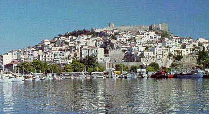

Η ακρόπολη της Καβάλας
 Η ακρόπολη που βλέπουμε σήμερα είναι κατασκευή του 15ου αιώνα. Ο επoικισμός και η ίδρυση της νέας πόλης, της Καβάλας, ανάγονται χρονικά στα έτη 1527 ή 1528. Η Καβάλα αναμορφώνεται σημαντικά την εποχή του Σουλεϊμάν του Μεγαλοπρεπούς (1521-1566), ο οποίος μαζί με το βεζύρη του Ιμπραήμ έκτισαν το υδραγωγείο της πόλης (Καμάρες), τον καινούργιο περίβολο και πλήθος άλλων κτισμάτων. Από αναφορές περιηγητών μαθαίνουμε ότι η Καβάλα χωριζόταν με τείχος σε πάνω και κάτω πόλη. Η κατασκευή του τείχους αυτού, που σώζεται ως τις μέρες μας, τοποθετείται χρονικά ανάμεσα στο 1591 και το 1669. Η Καβάλα, το δεύτερο μεγαλύτερο και σημαντικότερο λιμάνι της βόρειας Ελλάδας μετά τη Θεσσαλονίκη, ποτέ δεν έχασε τη στρατηγική και εμπορική της σημασία. Οι συχνές επιθέσεις και επιδρομές από πειρατικά πλοία (1684, βομβαρδισμός της πόλης από τους Βενετούς, 1771 λεηλασία της πόλης από το Ρωσικό στόλο) την ανάγκαζαν να διατηρεί πάντοτε την οχύρωση της σε καλή κατάσταση. | ||